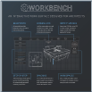

Workbench is a product designed for my interaction design class. We were encouraged to design a product that stretches the limits of modern technology. My partner and I created the idea of a digital workbench for architectural modeling. The workbench has a full touch-screen tabletop with a screen size of 3 feet by 6 feet.
During this project, we conducted research, created personas, performed competitive analysis, built wireframes, and conducted usability tests. Our findings were summarized in a written report and the final concept was presented with a poster.
The poster and UI mockups were created using InDesign, with some assets created using Photoshop and Illustrator. We designed Workbench for working professionals and serious hobbyists and aimed to create a product that was intuitive for novice users while efficient for expert users.
Push the Hay is a logic puzzle game based on Sokoban, the block pushing game. It is our second mobile app and was designed to be a fully functional game with custom-made graphics and animations. We hope to release this app on iOS and Android by the end of May.
DartGenie is Accompa’s first mobile app. It was originally intended to be a bare-bones darts scoring app. Over time, we continued adding features to make it more useful. It is available on iOS and Android in the respective app stores, with more than 10,000 downloads.
I acted as the primary product interface to our offshore developers, prioritizing tasks and fixes. I created the logic for the GenieBot AI, and took over the remaining interface and graphic design work upon joining the project approximately one month into the nine-month project. The app was designed in Illustrator, and the assets were provided as PNGs to the programmers. I conducted competitive analysis and created a marketing plan for the app. I was also the primary tester for the app.
These photos were taken for the final project of a photography class. We could choose any theme we liked, and I chose nighttime as the theme. I also adjusted the balance for these in Photoshop.